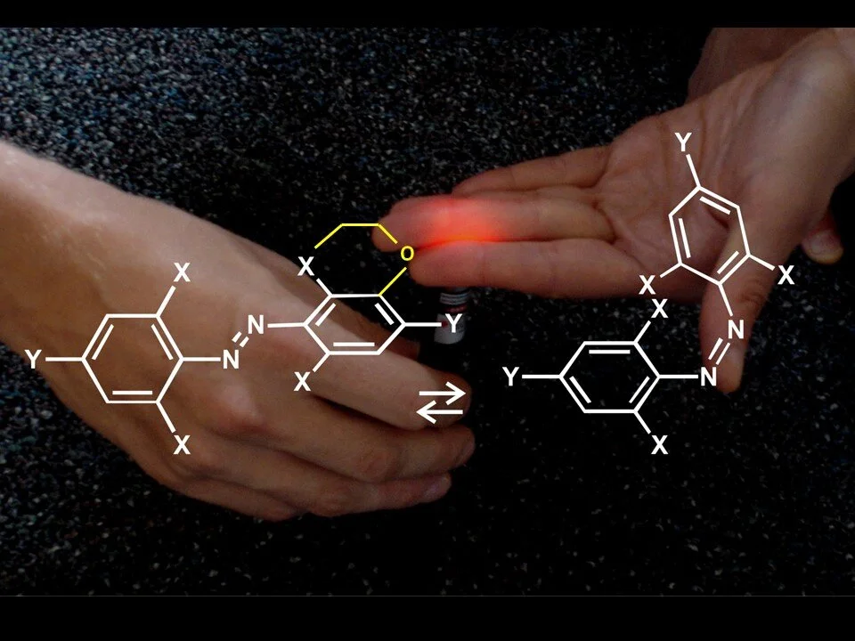
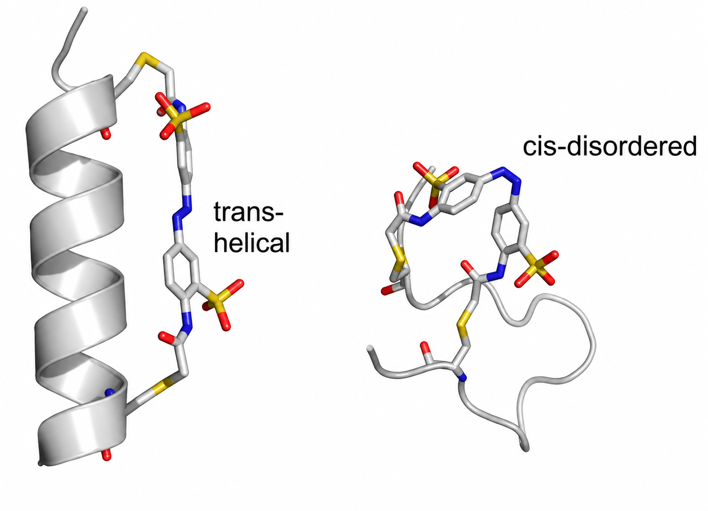

Photopharmacology
Bioactive small molecules that respond to light, functioning as controllable drugs and molecular probes.
Switching with red and near-IR light
Most photopharmaceuticals developed so far use an azobenzene derivative as the photoswitch. Unmodified azobenzenes require UV light for switching, but UV can damage cells and penetrates tissue poorly.
We have made a series of discoveries that led to azobenzenes that switch with red or even near-IR wavelengths — allowing much superior tissue penetration.

Driving conformational change with light
When azobenzenes are attached to peptides and proteins, the change in azobenzene conformation can induce changes in protein structure. We found that a thiol-reactive azobenzene cross-linker placed at cysteine residues spaced 11 apart in an alpha helix can control the stability of that helix.
Studied in detail, the trans form of the cross-linked peptide is helical in water whereas the cis form is disordered. Because the helix is central to so many functional proteins, this strategy for photo-control has found broad application — and we continue to explore new ways to use it to control protein function.
